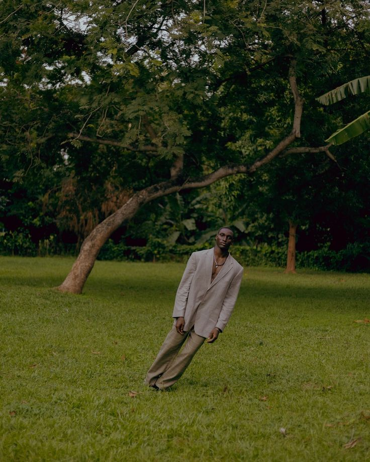
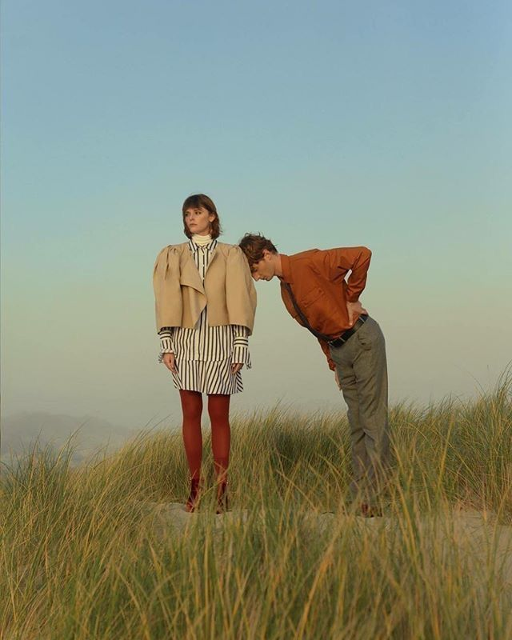
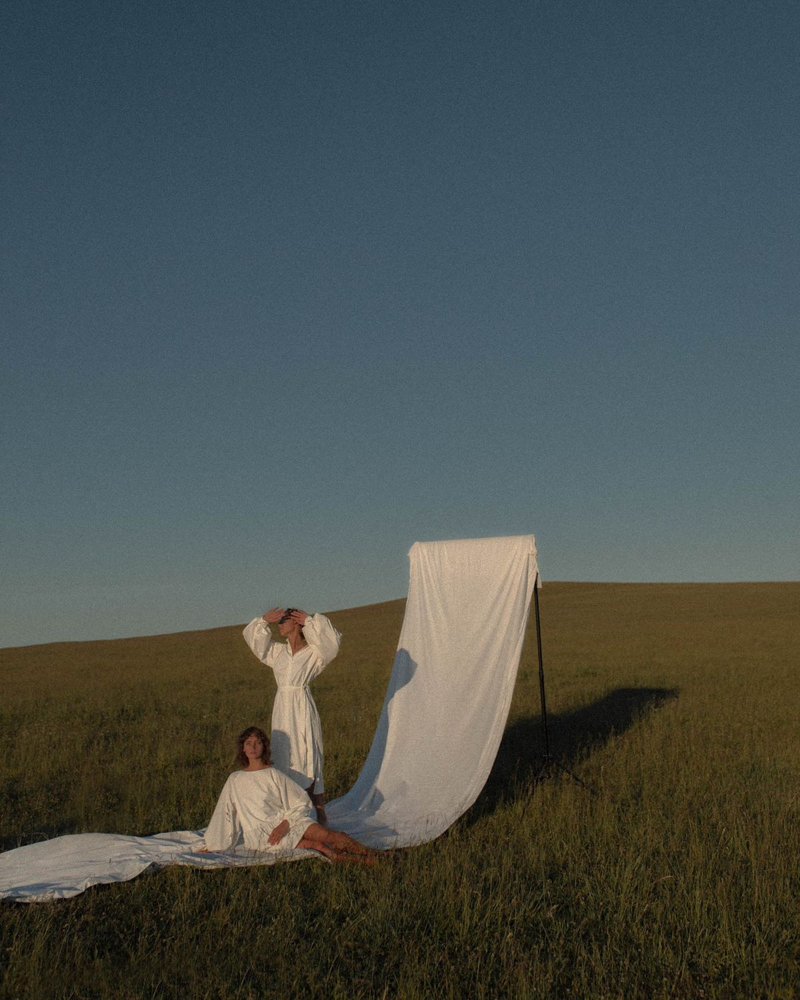
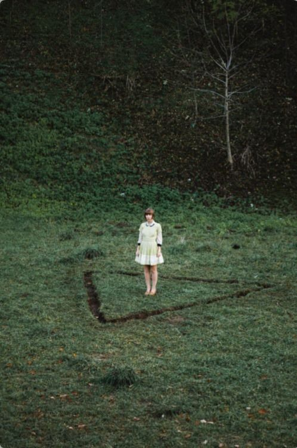

Framing the visual world.
This deck translates the brand’s emotional and conceptual foundation into a focused editorial direction for a client-facing photoshoot pitch.
About the Brand
Asato Kitamura is a New York-based designer and founder of ASATO, a fashion and art practice rooted in the exploration of human emotion, psychology, and self-expression.
The work translates internal states into visual language through form, gesture, symbolism, and the emotional relationship between body and garment.
Objective
- Highlight the emotional and sculptural qualities of each garment.
- Explore the relationship between body, environment, and feeling.
- Create a cohesive visual narrative for campaign, editorial, and social use.
Audience
Primary Audience
Culturally engaged, design-literate individuals who view fashion as a form of self-expression and emotional storytelling.
Secondary Audience
Creative professionals and art-oriented audiences drawn to conceptual, interdisciplinary work.
Design becomes a conduit for emotion — where silhouette, movement, and environment carry psychological weight.
Why this direction works.
The strategy connects the brand’s emotional framework to the visual decisions of the shoot, establishing a clear logic behind location, composition, and movement.
Core Idea
Exploring the tension between structured silhouettes and organic environments, this direction visualizes internal emotional states through contrast, isolation, and movement, with an editorial, Prada-esque sensibility. The natural setting serves as a nod to the organic undertones present within the garments themselves. Garments are activated through the body, shifting between control and release as they interact with the natural world.
Tension
Structure vs fluidity, control vs release, precision vs atmosphere.
Emotion
Isolation, vulnerability, and internal intensity expressed through body, garment, and space.
Movement
Using motion and distortion to activate garments and reveal form.
The proposed concept.
A single, focused direction designed to foreground silhouette, deepen emotional contrast, and position the garments within a living environment.
Structured by Nature
Where rigid silhouettes meet the unpredictability of the natural world.

Concept Description
This direction focuses on amplifying the most distinct aspects of each silhouette, treating form as the primary vehicle for expression. Garments are placed within natural environments to create a deliberate contrast between organic landscapes and the controlled, sculptural quality of each piece.
The tension between soft, evolving natural elements and dark, defined silhouettes highlights emotional duality — structure versus fluidity, internal versus external states.
Movement becomes a key tool in revealing this contrast. Through gesture, motion, and subtle distortion of the model’s form, the garments are activated, shifting from static objects into expressive extensions of the body.
Shoot Structure
- Section 01 — Isolation,Longing: Single model with backdrop. Controlled setup introducing a minimal backdrop to create a focused pop of color while isolating the garment.
- Section 02 — Tension: Forest/dusk setting, with a more enclosed environment with lower light to introduce depth, mood, and a shift toward introspection.
- Section 03 — Release: 1-2 models in wide, open landscape with multiple figures to emphasize scale, repetition of silhouette, and collective movement.
Garment Selection
The shoot will feature select pieces from the The Anatomy of Longing and Resonance Without Pulse collections, chosen for their sculptural qualities and organic undertones that align with the concept.
Key Characteristics
- Strong, defined silhouettes
- Organic, natural environments
- High contrast between subject and surroundings
- Movement-driven imagery
Moodboard Notes
- Nature vs garment contrast in color and texture
- Natural, slightly diffused or directional light
- Isolation within landscape and use of negative space
- Motion through body distortion, blur, or fabric movement
How the concept comes to life.
These elements define the tonal and visual behavior of the shoot, guiding production decisions without turning the deck into a full brand system.
Color Direction
An organic tonal world grounded in natural environments—favoring grassy greens, wheat tones, and sun-washed earth. Garments remain visually distinct within these settings, creating contrast through silhouette and form against soft, living color.
Color is used sparingly, prioritizing mood and emotional clarity over vibrancy. A minimal backdrop may be introduced to create a subtle pop of color, ensuring it does not compete with or overpower the garment.
Environment / Location
- Natural landscapes such as forest, rock, field, or open terrain
- Textural contrast through stone, foliage, earth, and weathered surfaces
- Minimal human interference to maintain emotional clarity
Lighting
- Primarily natural light
- Soft diffusion or directional light
- Avoid overly artificial or glossy lighting setups
Styling
- Minimal and non-distracting
- Focus on silhouette and structure
- Avoid elements that compete with the garments
Model Direction
- Body used as an emotional medium
- Poses that create tension or distortion
- Walking, turning, fabric interaction, and controlled gesture
- Partial obscuring or abstraction where appropriate
Composition & Motion
- Negative space and isolation within environment
- Asymmetry and framing that emphasizes silhouette
- Use of blur, gesture, or transition rather than only static poses
- Explore stillness versus release within the same visual world
Visual references.
Replace these placeholders with your selected campaign imagery, editorial references, location studies, or movement references. Add brief annotations to show exactly what is being borrowed from each image.

Silhouette in Landscape
This reference highlights the use of a minimal backdrop within a natural field, creating contrast between controlled form and organic environment. Focus on how the subject is isolated, and how color and shape are balanced without competing with the garment.

Movement / Gesture
Reference for motion, gesture, and the way the garment becomes active through posture, pacing, and controlled blur.

Color / Atmosphere
Reference for tonal world, environmental softness, and the emotional atmosphere created through light, field, and natural color.
Intended outputs.
Keep this concise and practical. The goal is to show where the imagery will live without overcomplicating the pitch.
Deliverables
- Campaign imagery
- Editorial / lookbook assets
- Social media selects
Usage
- Website and e-commerce
- Press and editorial placement
- Digital campaigns and rollout
From concept to production.
End with a clear, straightforward production path so the client can see how the direction moves into execution.
Align on visual direction and confirm overall tone.
Finalize casting, location, and image references.
Develop the shot list and production notes.
Execute the shoot and refine final asset delivery.